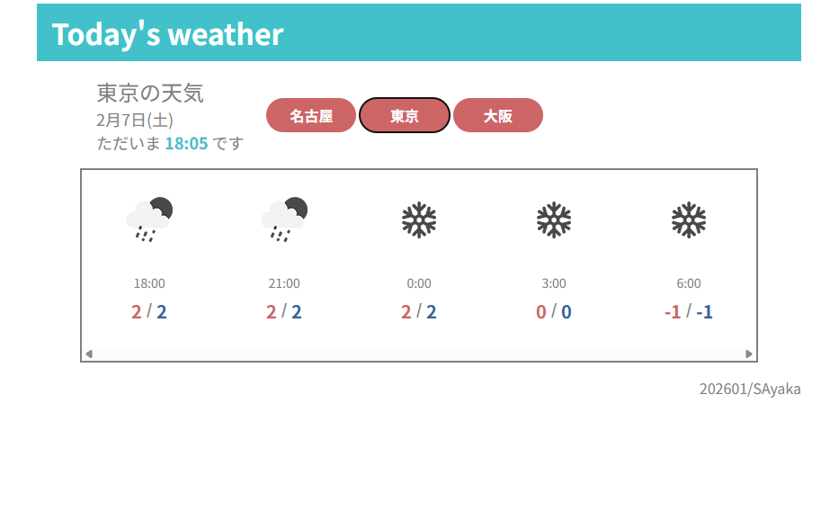

Work
Weathe app
天気APIを利用したWebアプリです。 JavaScriptでのAPI連携と、取得したデータの表示処理を学ぶことを目的に制作しました。
📅 2025.01／⏱️ 約4か月
- JavaScript
- HTML
- CSS

実装したこと
- 都市を切り替えて天気を表示できる機能を実装
- 天気情報取得のために外部APIを利用
- 取得したデータを加工し、現在の天気・気温を画面に表示
学んだこと
外部APIを使ったデータ取得から表示までの一連の流れを理解することを目的に制作しました。
- APIからデータを取得する基本的な流れ
- JSONデータの扱い方
- JavaScriptを用いたデータの加工と表示
- 日時情報の取り扱い
現時点での課題
- 天気予報の表示内容が最低限に留まっており、情報量や見せ方に改善の余地がある
- アイコンと背景のコントラストが弱く、視認性に課題がある
- 日付の判定をUTC基準で行っているため、日本時間では当日分の予報が一部欠けてしまう
今後の改善
- 今日・明日の天気予報を1日単位で表示する機能の追加
- APIの時刻データを日本時間基準で扱い「今日の予報」が欠けないよう修正
Profile
SAyaka
できること
- HTML / CSS（レイアウト・レスポンシブ対応）
- JavaScript（基礎文法、DOM操作、API連携）
大切にしていること
- 分からないままにせず、原因を言語化すること
- ひとまず手を動かし、改善を重ねること
すきなこと
- 犬の動画や写真を見ること
- かわいいデザインを見ること
Contact
お問い合わせは GitHub よりお願いします。